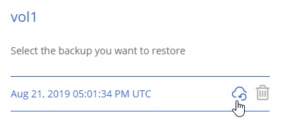
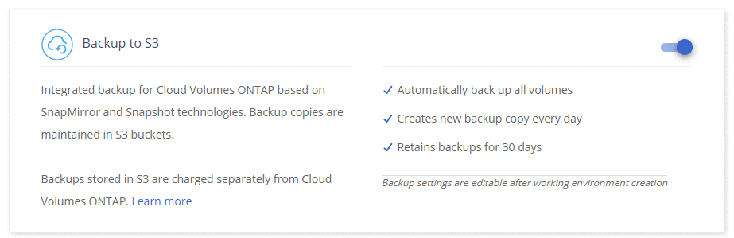
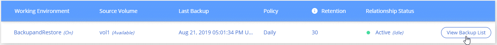
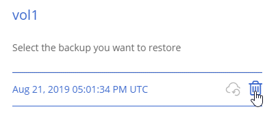

将数据备份到 Amazon S3
提供者
备份到 S3 是 Cloud Volumes ONTAP 的一项附加功能，可提供完全托管的备份和还原功能，以保护云数据并对其进行长期归档。备份存储在 S3 对象存储中，与用于近期恢复或克隆的卷 Snapshot 副本无关。
启用备份到 S3 后，此服务将对数据执行完整备份。所有附加备份均为增量备份，这意味着仅备份更改的块和新块。
请注意，您必须使用 Cloud Manager 执行所有备份和还原操作。直接从 ONTAP 或 Amazon S3 执行的任何操作都会导致配置不受支持。
快速入门
按照以下步骤快速入门，或者向下滚动到其余部分以了解完整详细信息。
验证是否支持您的配置
验证以下内容：
-
Cloud Volumes ONTAP 9.4 或更高版本正在受支持的 AWS 区域中运行： N.弗吉尼亚州，俄勒冈州，爱尔兰，法兰克福或悉尼
-
对于 Cloud Volumes ONTAP 安全组上的出站流量， TCP 端口 5010 处于打开状态（默认情况下处于打开状态）
-
对于 Cloud Manager 安全组上的出站流量， TCP 端口 8088 处于打开状态（默认情况下处于打开状态）
-
可从 Cloud Manager 访问以下端点：
-
Cloud Manager 可以在 VPC 中最多分配两个接口 VPC 端点（每个 VPC 的 AWS 限制为 20 ）
-
Cloud Manager 有权使用最新列出的 VPC 端点权限 "Cloud Manager 策略"：
"ec2:DescribeVpcEndpoints", "ec2:CreateVpcEndpoint", "ec2:ModifyVpcEndpoint", "ec2:DeleteVpcEndpoints"
在新系统或现有系统上启用备份到 S3
-
新系统：在工作环境向导中，默认情况下会启用备份到 S3 功能。请务必保持此选项处于启用状态。
-
现有系统：打开工作环境，单击备份设置图标并启用备份。

如果需要，请修改备份策略
默认策略每天备份卷，并为每个卷保留 30 个备份副本。如果需要，您可以更改要保留的备份副本数。

根据需要还原数据
在 Cloud Manager 顶部，单击 * 备份和还原 * ，选择一个卷，选择一个备份，然后将数据从备份还原到新卷。

要求
开始将卷备份到 S3 之前，请阅读以下要求，以确保您的配置受支持。
- 支持的 ONTAP 版本
-
Cloud Volume ONTAP 9.4 及更高版本支持备份到 S3 。
- 支持的 AWS 区域
-
-
美国东部（ N.维吉尼亚）
-
US West （俄勒冈州）
-
欧盟（爱尔兰）
-
欧盟（法兰克福）
-
亚太地区（悉尼）
-
- 需要 AWS 权限
-
"ec2:DescribeVpcEndpoints", "ec2:CreateVpcEndpoint", "ec2:ModifyVpcEndpoint", "ec2:DeleteVpcEndpoints" - AWS 订阅要求
-
从 3.7.3 版开始， AWS Marketplace 中提供了一个新的 Cloud Manager 订阅。此订阅可用于部署 Cloud Volumes ONTAP 9.6 及更高版本的 PAYGO 系统以及备份到 S3 功能。您需要 "订阅此新的 Cloud Manager 订阅" 在启用备份到 S3 之前。备份到 S3 功能的计费通过此订阅完成。
- 端口要求
-
-
TCP 端口 5010 必须处于打开状态，才能传输从 Cloud Volumes ONTAP 到备份服务的出站流量。
-
对于 Cloud Manager 安全组上的出站流量，必须打开 TCP 端口 8088 。
如果使用预定义的安全组，则这些端口已打开。但是，如果您使用自己的端口，则需要打开这些端口。
-
- 出站 Internet 访问
-
Cloud Manager 会联系此端点，将您的 AWS 帐户 ID 添加到备份到 S3 的允许用户列表中。
- 接口 VPC 端点
-
VPC 中的任何其他 Cloud Volumes ONTAP 系统都使用这两个 VPC 端点。
"接口 VPC 端点的默认限制为每个 VPC 20 个"。在启用此功能之前，请确保您的 VPC 未达到此限制。
在新系统上启用 S3 备份
默认情况下， " 备份到 S3" 功能在工作环境向导中处于启用状态。请务必保持此选项处于启用状态。
-
单击 * 创建 Cloud Volumes ONTAP * 。
-
选择 Amazon Web Services 作为云提供商，然后选择单个节点或 HA 系统。
-
填写详细信息和凭据页面。
-
在备份到 S3 页面上，保持此功能处于启用状态，然后单击 * 继续 * 。

-
完成向导中的页面以部署系统。
系统上已启用备份到 S3 功能，每天备份卷并保留 30 个备份副本。 了解如何修改备份保留。
在现有系统上启用 S3 备份
您可以在现有 Cloud Volumes ONTAP 系统上启用到 S3 的备份，前提是您运行的配置受支持。有关详细信息，请参见 [Requirements]。
-
打开工作环境。
-
单击备份设置图标。
-
选择 * 自动备份所有卷 * 。
-
选择您的备份保留，然后单击 * 保存 * 。
备份到 S3 功能将开始对每个卷进行初始备份。
更改备份保留
默认策略每天备份卷，并为每个卷保留 30 个备份副本。您可以更改要保留的备份副本数。
-
打开工作环境。
-
单击备份设置图标。
-
更改备份保留，然后单击 * 保存 * 。
还原卷
从备份还原数据时， Cloud Manager 会将完整卷还原到 new 卷。您可以将数据还原到同一工作环境或其他工作环境。
-
在 Cloud Manager 顶部，单击 * 备份和还原 * 。
-
选择要还原的卷。

-
找到要从中还原的备份，然后单击还原图标。
-
选择要将卷还原到的工作环境。
-
输入卷的名称。
-
单击 * 还原 * 。

删除备份
所有备份都会保留在 S3 中，直到您从 Cloud Manager 中删除为止。删除卷或删除 Cloud Volumes ONTAP 系统时，不会删除备份。
-
在 Cloud Manager 顶部，单击 * 备份和还原 * 。
-
选择一个卷。
-
找到要删除的备份，然后单击删除图标。

-
确认要删除备份。
禁用 S3 备份
禁用 S3 备份会禁用系统上每个卷的备份。不会删除任何现有备份。
-
打开工作环境。
-
单击备份设置图标。
-
禁用 * 自动备份所有卷 * ，然后单击 * 保存 * 。
备份到 S3 的工作原理
以下各节提供了有关备份到 S3 功能的详细信息。
备份所在位置
备份副本存储在 NetApp 拥有的 S3 存储分段中，该分段与 Cloud Volumes ONTAP 系统所在的区域相同。
备份是增量备份
对数据进行初始完整备份后，所有其他备份都是增量备份，这意味着只会备份更改的块和新块。
备份在午夜进行
每天的备份在每天午夜后开始。此时，您无法计划在用户指定的时间执行备份操作。
备份副本与您的 Cloud Central 帐户关联
备份副本与关联 "Cloud Central 帐户" Cloud Manager 所在位置。
如果您在同一 Cloud Central 帐户中有多个 Cloud Manager 系统，则每个 Cloud Manager 系统将显示相同的备份列表。其中包括与其他 Cloud Manager 系统中的 Cloud Volumes ONTAP 实例关联的备份。
备份策略在系统范围内执行
要保留的备份数是在系统级别定义的。您不能为系统上的每个卷设置不同的策略。
安全性
使用 AES-256 位空闲加密和正在传输的 TLS 1.2 HTTPS 连接保护备份数据。
数据通过安全的 Direct Connect 链路传输到服务，并通过 AES 256 位加密在空闲时提供保护。然后，加密数据将使用 HTTPS TLS 1.2 连接写入云。数据也只能通过安全的 VPC 端点连接传输到 Amazon S3 ，因此不会通过 Internet 发送任何流量。
除了服务拥有的整体加密密钥之外，还会为每个用户分配一个租户密钥。这一要求类似于需要一对密钥才能在银行内为客户提供安全保护。所有密钥作为云凭据，均由服务安全存储，并且仅限负责维护服务的特定 NetApp 人员使用。
限制
-
如果您使用以下任一实例类型，则 Cloud Volumes ONTAP 系统最多可以将 20 个卷备份到 S3 ：
-
m4.xlarge
-
m5.xlarge
-
r4.xlarge
-
R5.xlarge
-
-
您在 Cloud Manager 外部创建的卷不会自动备份到 S3 。
例如，如果您使用 ONTAP 命令行界面， ONTAP API 或 System Manager 创建卷，则不会自动备份该卷。
如果要备份这些卷，则需要禁用备份到 S3 ，然后重新启用它。
-
从备份还原数据时， Cloud Manager 会将完整卷还原到 new 卷。此新卷不会自动备份到 S3 。
如果要备份通过还原操作创建的卷，则需要禁用备份到 S3 ，然后重新启用它。
-
您可以备份大小不超过 50 TB 的卷。
-
备份到 S3 最多可以为一个卷保留 245 个备份。
-
启用备份到 S3 后， Cloud Volumes ONTAP 系统不支持 WORM 存储。
 请求文档变更
请求文档变更 在 GitHub 上编辑
在 GitHub 上编辑 提供者指南
提供者指南